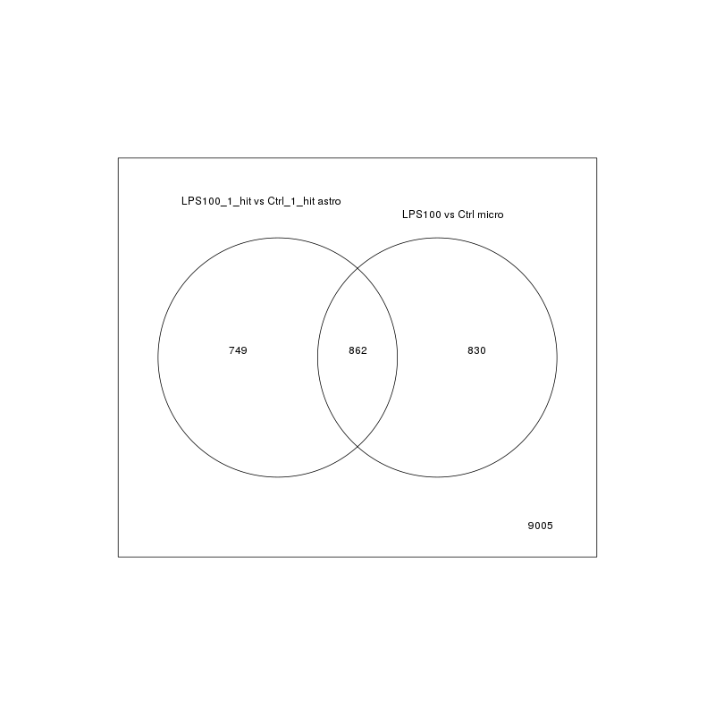
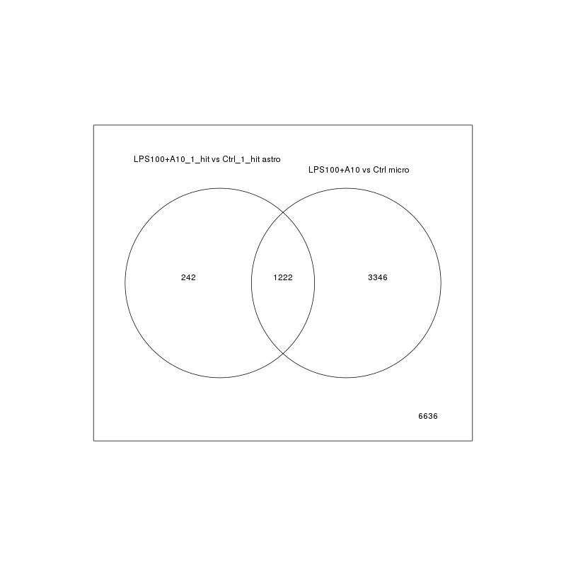
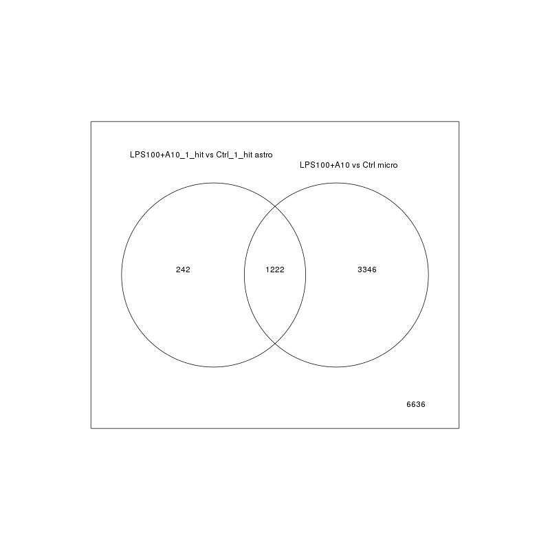
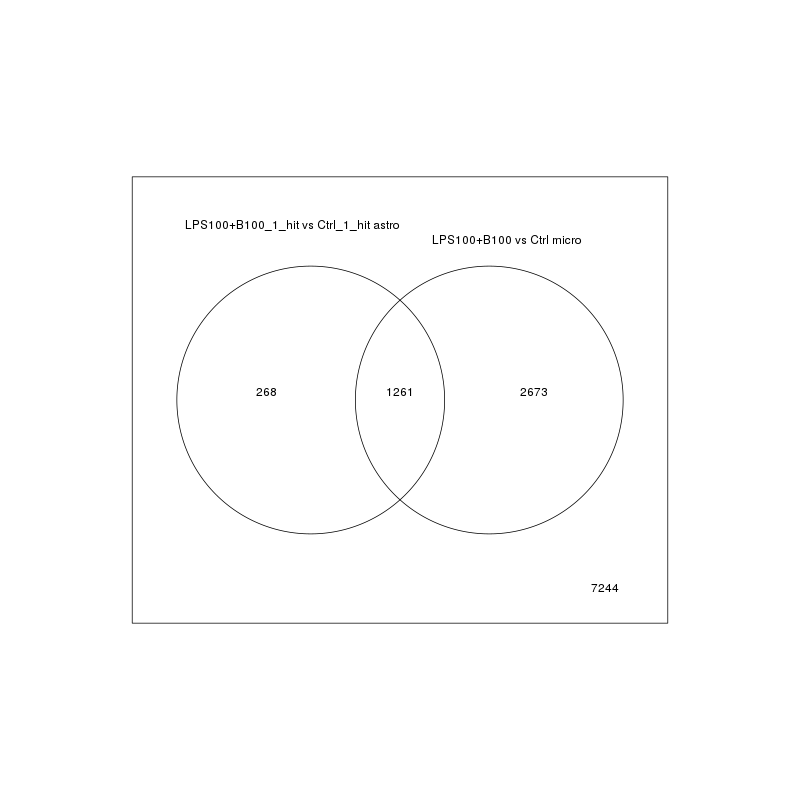
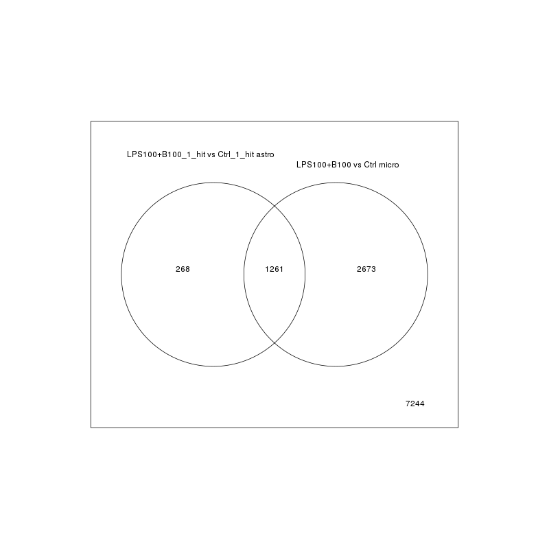

The Venn diagrams all contain clickable links. Click on the counts in any cell to see a table of the genes in that cell. Also please note that the tables are sortable - simply click on any header to sort on that column.
 
 

(Page generated on Fri Mar 22 10:39:08 2019 by hwriter )